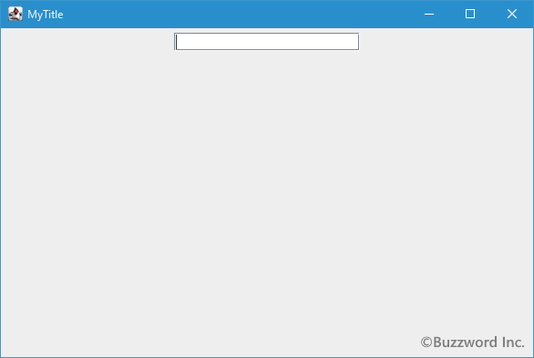
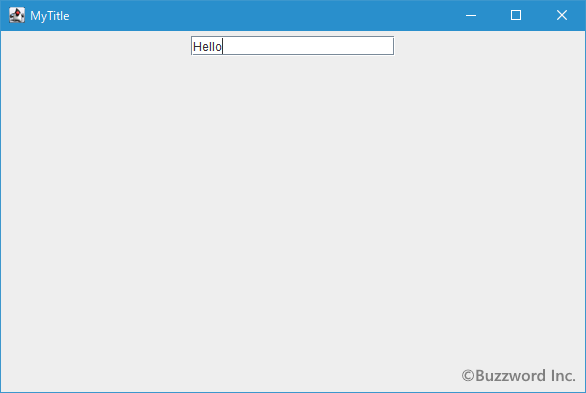
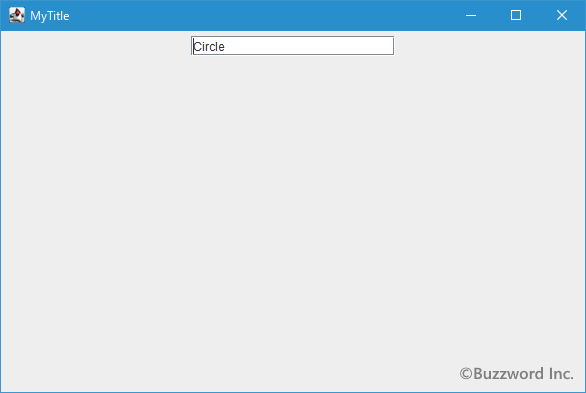
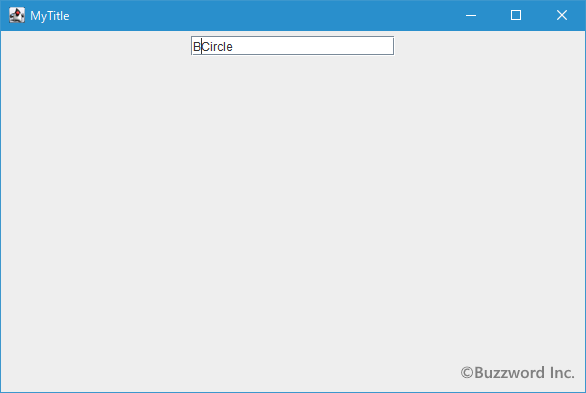
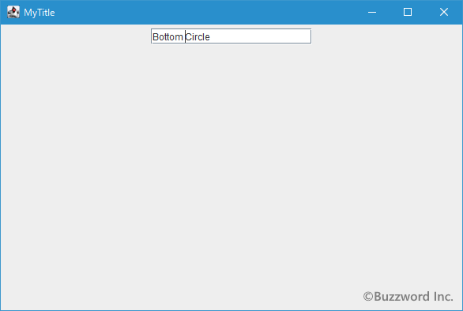
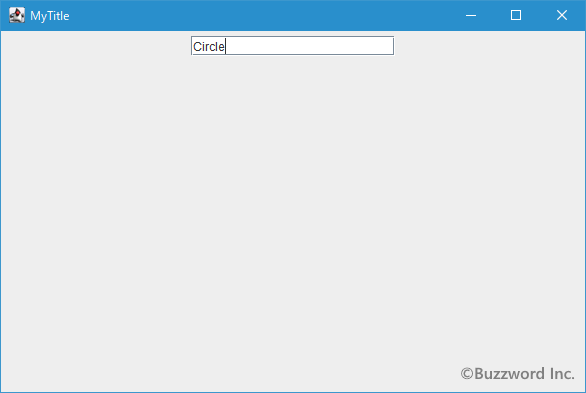
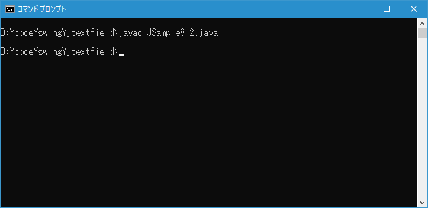
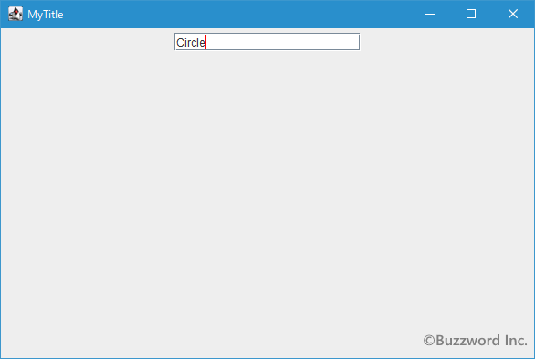

テキストフィールドのキャレットの位置と色を設定する
キャレットとはテキストフィールド内でテキストを入力する位置に表示されている縦棒のことです。ここではテキストフィールドの中でキャレットの位置を設定する方法とキャレットの色を設定する方法について解説します。
キャレットの位置を設定する
テキストフィールドを追加した場合、初期値を設定していな場合にはキャレットは先頭に表示されています。文字を入力するとキャレットに位置に入力した文字が表示され、キャレットは入力された文字の後ろに位置に移動します。連続で文字を入力するとこの繰り返しになりますので文字が順にテキストフィールドに入力されていきます。


ただテキストフィールドのオブジェクトを作成する時に初期値を設定した場合、キャレットの位置は初期値として入力されたテキストの最後ではなく、先頭の位置に設定されています。

このまま文字を入力すると初期値として設定したテキストの後ではなく、初期値のテキストの先頭のところに文字が挿入されていきます。


キャレットの位置は利用者がマウスやキーボードを使って移動できますしのでこのままで問題はないのですが、初期値の最後にキャレットがあった方が便利な場合もあります。このような場合にはキャレットの位置を設定することができます。キャレットの位置を設定するには JTextField クラスの親クラスである JTextComponent で用意されている setCaretPosition メソッドを使います。
public void setCaretPosition?(int position)
TextComponentのテキスト挿入キャレットの位置を設定します。 キャレットは変更を追跡するので、コンポーネントのベースとなるテキストが変更されるとこれも移動することに注意してください。 ドキュメントがnullの場合には何も行いません。 位置は0とコンポーネント・テキストの長さとの間でなければならず、そうでない場合は例外がスローされます。
パラメータ:
position - 位置
例外:
IllegalArgumentException - positionに指定した値が0未満、またはコンポーネント・テキストより長い場合
引数にはキャレットの位置を int 型の数値で指定します。文字の単位で何文字目の先頭にキャレットを配置するのかを指定して下さい。例えば先頭の文字の前に配置する場合は 0 、先頭の文字と 2 番目の文字の間に配置するなら 1 を指定します。
実際の使い方は次のようになります。
JTextField text = new JTextField("Hello!");
text.setCaretPosition(1);
上記の場合、キャレットは先頭の文字と 2 文字目の文字の間である "H" と "e" の間の位置に移動します。
入力されているテキストの最後の位置にキャレットを移動させたい場合は次のようになります。
JTextField text = new JTextField("Hello!");
text.setCaretPosition(text.getText().length());
text.getText() で入力されているテキストを取得し length() で取得したテキストの文字数を取得します。今回の場合は 6 となりますので、 6 番目の文字である "!" の後の位置(つまりテキストの最後の位置)にキャレットが移動します。
サンプルプログラム
それでは簡単なサンプルプログラムを作って試してみます。テキストエディタで次のように記述したあと、 JSample8_1.java という名前で保存します。
import javax.swing.JFrame;
import javax.swing.JTextField;
import javax.swing.JPanel;
import java.awt.Container;
import java.awt.BorderLayout;
class JSample8_1 extends JFrame{
public static void main(String args[]){
JSample8_1 frame = new JSample8_1("MyTitle");
frame.setVisible(true);
}
JSample8_1(String title){
setTitle(title);
setBounds(100, 100, 600, 400);
setDefaultCloseOperation(JFrame.EXIT_ON_CLOSE);
JTextField text = new JTextField("Circle", 20);
text.setCaretPosition(text.getText().length());
JPanel p = new JPanel();
p.add(text);
Container contentPane = getContentPane();
contentPane.add(p, BorderLayout.CENTER);
}
}
次のようにコンパイルを行います。
javac JSample8_1.java
コンパイルが終わりましたら実行します。
java JSample8_1
テキストフィールドに設定した初期値の最後にキャレットが移動しています。

キャレットの色を設定する
テキストフィールドのキャレットの色を任意の色に設定することが可能です。キャレットの色を設定するには JTextField クラスの親クラスである JTextComponent で用意されている setCaretColor メソッドを使います。
public void setCaretColor?(Color c)
キャレットをレンダリングするのに使う現在の色を設定します。 これをnullに設定すると、効果的にデフォルトの色を復元します。 色を設定すると、PropertyChangeイベント(caretColor)が発生します。
パラメータ:
c - 色
引数にはキャレットの色として指定したいColorクラスのオブジェクトを指定します。Colorクラスについては「Colorクラス」を参照して下さい。
実際の使い方は次のようになります。
JTextField text = new JTextField("Hello!");
text.setCaretColor(Color.RED);
サンプルプログラム
それでは簡単なサンプルプログラムを作って試してみます。テキストエディタで次のように記述したあと、 JSample8_2.java という名前で保存します。
import javax.swing.JFrame;
import javax.swing.JTextField;
import javax.swing.JPanel;
import java.awt.Container;
import java.awt.BorderLayout;
import java.awt.Color;
class JSample8_2 extends JFrame{
public static void main(String args[]){
JSample8_2 frame = new JSample8_2("MyTitle");
frame.setVisible(true);
}
JSample8_2(String title){
setTitle(title);
setBounds(100, 100, 600, 400);
setDefaultCloseOperation(JFrame.EXIT_ON_CLOSE);
JTextField text = new JTextField("Circle", 20);
text.setCaretPosition(text.getText().length());
text.setCaretColor(Color.RED);
JPanel p = new JPanel();
p.add(text);
Container contentPane = getContentPane();
contentPane.add(p, BorderLayout.CENTER);
}
}
次のようにコンパイルを行います。
javac JSample8_2.java

コンパイルが終わりましたら実行します。
java JSample8_2
キャレットの色が指定した色(赤色)に変更されていることが確認できます。

-- --
テキストフィールドの中でキャレットの位置、およびキャレットの色を設定する方法について解説しました。
( Written by Tatsuo Ikura )

著者 / TATSUO IKURA
初心者～中級者の方を対象としたプログラミング方法や開発環境の構築の解説を行うサイトの運営を行っています。